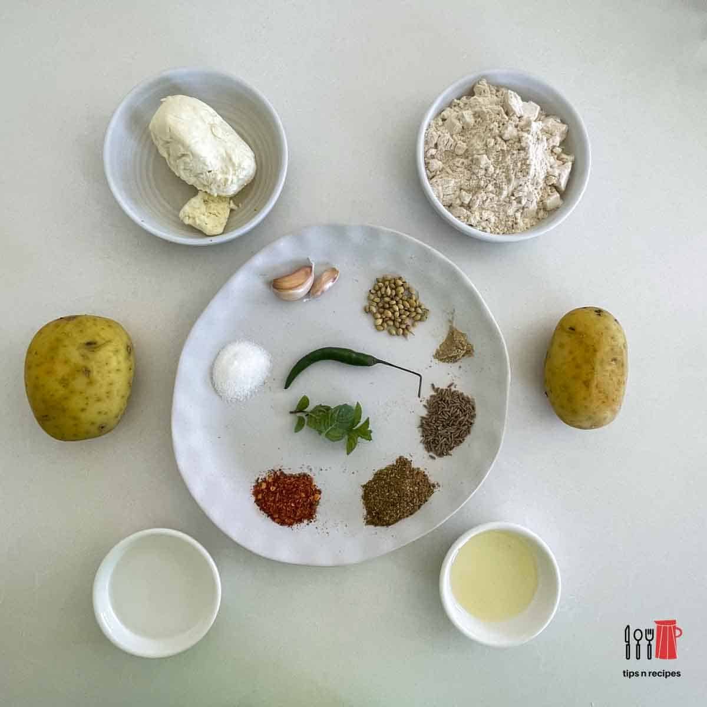

Aloo Paratha Recipe

Ingredients
- 2 medium potatoes (boiled and mashed)
- 2 cups whole wheat flour
- 1-2 green chilies (finely chopped)
- 1 teaspoon cumin seeds
- 1/2 teaspoon garam masala
- Salt to taste
- Water (as needed)
- Oil or ghee (for frying)
Instructions
- In a bowl, mix the mashed potatoes with green chilies, cumin seeds, garam masala, and salt.
- In another bowl, knead the whole wheat flour with water to make a soft dough.
- Divide the dough and potato mixture into equal portions.
- Roll out one portion of dough into a circle, place a portion of the potato filling in the center, and seal the edges.
- Roll it out gently into a flat circle.
- Heat a tawa (griddle) and cook the paratha on both sides, applying oil or ghee until golden brown.
- Serve hot with yogurt or pickle.
Dietary Restrictions
This recipe is vegetarian and can be made vegan by using oil instead of ghee.
Back to Recipes